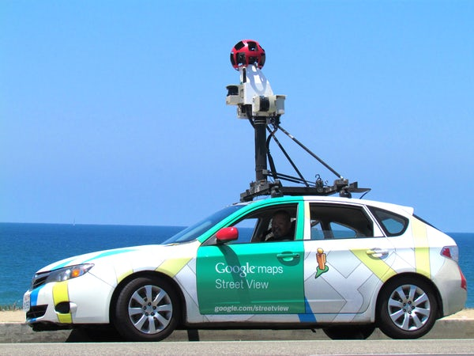

Why I created this website
The reason I created this website was to inform those who were interested in this subject that the whole world is not looking at the same map. The world map can not only change by where you live, but also what applications you use. The target audience was those who were interested in cartography, geography and geopolitics. I also created this website because it was a subject I enjoy discussing this topic.
Sources
I got most of my sources through websites like Google maps webpage on Wikipedia,Human Interests youtube page and Fossbytes website.
Click on for more information
To get in contact
Email: example123@none.com
Number: 086 345 0686